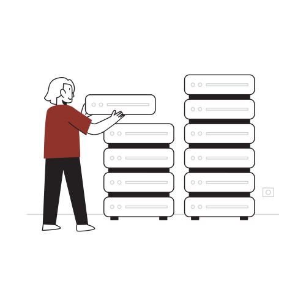

Elementos básicos

SLE2 es un lenguaje diseñado para apoyar la formación profesional de estudiantes de Informática. Las construcciones del lenguaje fueron cuidadosamente seleccionadas para que el alumno se concentre en la búsqueda de las soluciones algorítmica apropiadas, obviando detalles de implementación que seguramente tendrá ocasión de estudiar en otras etapas de su aprendizaje.
El lenguaje presenta características que lo hacen apropiado para expresar algoritmos de las etapas iniciales del aprendizaje, pero simultáneamente reúne un rico conjunto de construcciones que posibilitan el tratamiento de tópicos más avanzados de estructuras de datos y programación modular.
Además SLE2 es gratuito.
Conocer más de SLE2